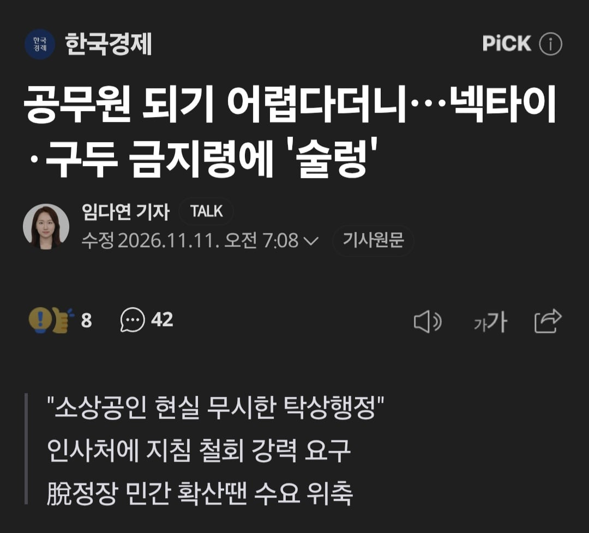
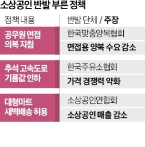

https://n.news.naver.com/article/015/0005352551?sid=102
술렁


https://n.news.naver.com/article/015/0005352551?sid=102
술렁
난 십년가까이됨. 쿠팡 컬리 쓱
저런 식으로 드러누워서 징징거리고 떼쓰면 다 들어주니까
공권력이 너무 무시당하는거같은데
술렁술렁 꿀렁
훌렁 벌렁
우왓, 몽글몽글
ㅋㅋㅋㅋㅋ미친새끼들 ㅋㅋㅋ
포멀한 캐주얼 입고오라는 뜻
어짜피 한벌은 필요한데 뭔 상관?
'맞춤'양복협회에서 떼쓰는중이라
양복들 대체로 걍 공장에서 찍어나오는거 사서 수선해서 입지않나
그것도 참 신기하네.. 사회 초년생들 면접본다고 맞춤양복 해입을것도 아닌데..
폴로셔츠 니트 슬랙스 치노팬츠 농가는 신났어유
병신들 앵앵소리 하나둘 들어주면 나랏일을 어떻게해
면접에 편하게입고오라고 해도 ㅈㄹ
눈치보고 정장입고오는 놈들 꼭 있고 금지라 해도 페널티는 줄 순 없고 그러다보면 정장 안입는놈이 눈치없는놈 되는 케쥬얼 면접 눈치게임 시작~
저런 헛소리는 안들어줘야지 뭔 ㅋㅋㅋ
저런거 기사화를 꼭 해줘야되나 말도안되는건 무시가 답인데
저건 진짜 탁상행정인게 취준생들은 사복으로 꾸미고 오는게 더 지옥이야 ㅋㅋ
요즘 대여가 얼마나 잘되어있는데
ㄹㅇ 나도 정장이 더 편함..비즈니스 캐주얼은 또 뭐입을 지 고민하고 옷 없으면 어차피 사야돼...
정장은 패션으로 평가받을 일 없는데 사복은 이제 좆된거지
면접에서 첫인상이 얼마나 중요한데 패션센스로 결정되면 ㅅㅂ ㅋㅋㅋㅋ
요즘 걍 유니클로나 무탠다드에서 대충 사입고 가던데
사회초년생이 맞춤을 한다고?
ㅈ상공인은 닥치시고
면접에 정장이 그냥 맘편할거같은디
나는 면접 때 정장 나쁘지 않다고 생각함. 정장 싸고 적당히 괜찮은 것 20만 언저리면 세트로 살 수 있고 노멀한 디자인이면 체중이 변하지 않는 한 향후 10년 넘게 경조사 모두 착용 가능..
윗댓들도 언급이 좀 있지만, 나처럼 패션 잘 모르는 사람은 오히려 사복 패션 챙겨가는 게 더 스트레스..
ㄹㅇ 정장이 편함 오히려
공무원들 구청식당도 평일에 하루 쉬는곳 많음
왜냐?
주변 소상공인들 살려주려고
공무원들은 일주일에 한끼는 밖에서 사먹어야 함
우린 소상공인 살린다고 월급에서 2만원 전통시장 상품권으로 줌
공무원들은 면접볼때도 양복 맞춰입고가서 면접보나? 상상도 못했네
양복 안입는데는 좆소뿐이지않냐ㅋㅋㅋ 보수관료제조직 끝판왕인 공뭔에 양복 안입는다는 생각이 더 이상한데
너는 면접때부터 맞춰입고갔음? 나는 그냥 기성 한벌 사서 입었었는데.. 사실 아직도 맞춰서 산거없음..
아 맞춤정장 이야기구나 나는 대충읽다 맞춰(갖춰)입다로 이해했었음ㅋㅋㅋ 기성복이면 충분하지
맞춰입진않고 기성 양복 사 입고 가던데
이젠 패션센스까지 보겠습니다.ㅋㅋㅋㅋ
세미정장룩이 더 어렵드라.. 정장입지말라 지침내려오니까 신경쓰여서 입을수도 없고 어렵사리 깔끔댄디룩 입고 갔더니 죄다 양복입고왔더라 십ㅋㅋㅋㅋ 할거면 아예 정장입으면 감점준다 해야 안입지. 근데 진짜 정장입는게 훨 맘편함 자유복장이 더 어려워
소상공인 살린다고 실제 국민/소비자 죽이는정책 그만좀 했으면...그거 안살린다고 죽을 소상공인은 그럼 뭐임? 애초에 폐업했어야하는 업종 아님? 막말로 치킨업계 살리자고 통큰치킨 막자는 의견아냐 ㅋㅋ
역시나 올해도 있구만.. 편하게 입고 오란다고 진짜로 편하게 오는 버러지들이
양복 개불편한데 좀 없어지면 좋겠음
근데 솔직히 면접보러갈때 정장금지시키면 더 고민될즛
솔직히 정장이 더 편함
쿠팡 새벽 배송 생기고, 마트 언제 가봤지 생각도 안나네